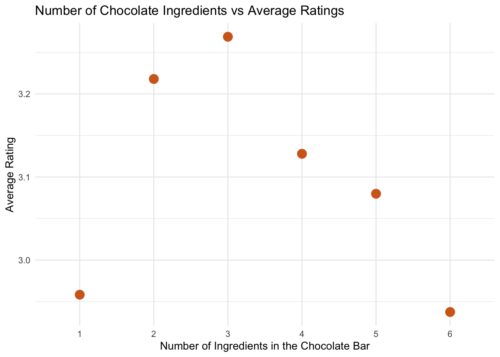
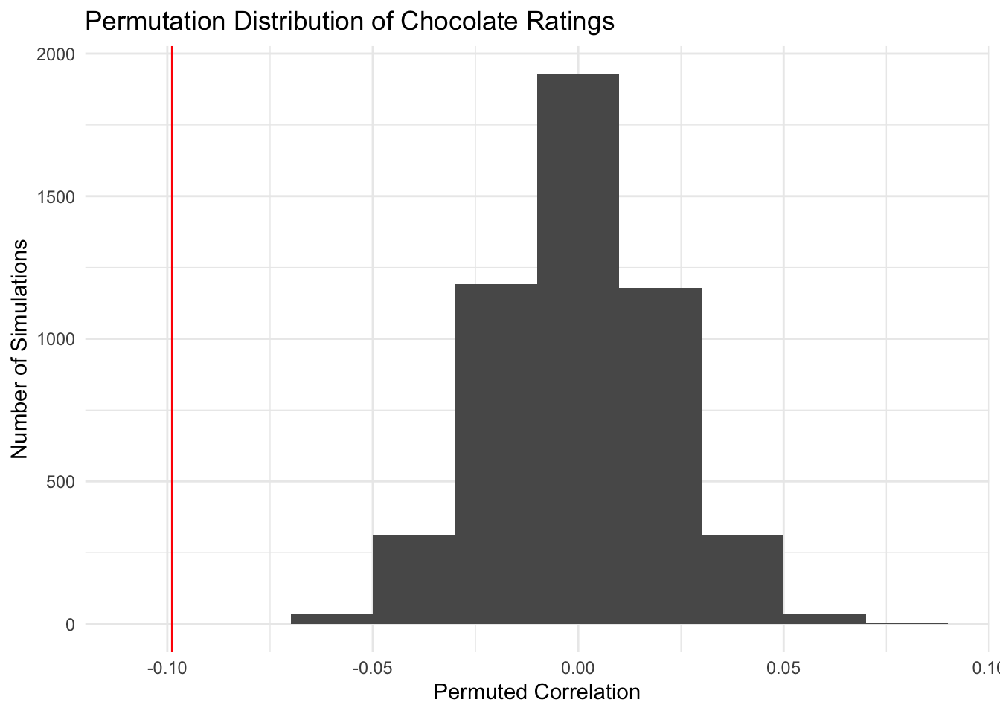

Show the code
library(tidyverse)
chocolate <- readr::read_csv('https://raw.githubusercontent.com/rfordatascience/tidytuesday/refs/heads/main/data/2022/2022-01-18/chocolate.csv')Neha Dixit
November 5, 2026
Chocolate is one of the most popular sweet treats globally, with the global chocolate market generating approximately $135 billion - $147 billion annually. From candy to various other desserts, chocolate is a versatile product that makes it’s way into almost every cuisine. Because of it’s popularity, there are many different ways companies create their chocolate, and there’s a lot of discussion about how the number of ingredients in a chocolate bar affects the final flavor profile of the treat.
For this simulation, we will be analyzing whether the number of ingredients in a chocolate bar is associated with a change in the overall rating of the chocolate bar. Specifically, we will be looking at the correlation between the number of ingredients in a chocolate bar and the overall rating for that chocolate bar.
The data for this analysis come from the TidyTuesday Chocolate bars dataset.
This dataset comes from the Flavors of Cacao website. The dataset consists of ______
First, we need to make sure the format of our data is correct to allow for the proper analysis. This requires us to change a few components in our dataframe:
Before starting our simulation, we should first visualize the relationship between the number of ingredients in a chocolate bar and its average rating. To do this, I grouped the chocolate bars by their number of ingredients and calculated the average rating for each group.
chocolate_two |>
group_by(num_ingredients) |>
summarize(
mean_rating = mean(rating, na.rm = TRUE)) |>
ggplot(aes(x = num_ingredients, y = mean_rating)) +
geom_col(fill = "chocolate") +
labs(
title = "Number of Chocolate Ingredients vs Average Ratings",
x = "Number of Ingredients in the Chocolate Bar",
y = "Average Rating"
) +
theme_minimal()
From the plot, we can see that the average ratings range from approximately 2.95 to 3.30, with chocolate bars containing 3 ingredients having the highest average rating. At first glance, this could suggest that chocolate bars with three ingredients are associated with higher ratings. However, the differences between these averages are relatively small, meaning we cannot make this conclusion. Additionally, this plot does not tell us whether these differences are statistically significant or whether they are due to random variation.
Because of this, we will use a simulation (specifically, a permutation test) to test whether our data provides sufficient evidence of a relationship between the number of ingredients in a chocolate bar and its rating.
We will be conducting a permutation test to investigate whether there is a relationship between the number of ingredients in a chocolate bar and it’s rating. Because we want to analyze the strength and direction of the relationship between these two variables, our statistic of interest will be the Pearson correlation coefficient.
In order to run a permutation test, we need to establish our hypotheses:
\[H_0: \text{There is no association between the number of ingredients in a chocolate bar and its rating.}\] \[H_a: \text{There is an association between the number of ingredients in a chocolate bar and its rating.}\]
We can also write our hypotheses numerically, using the Pearson correlation coefficient, like so: \[H_0: \rho = 0\] \[H_a: \rho \neq 0\]
First, let’s calculate the observed correlation in our data. This will be the value we’ll compare against the correlations produced by our simulations.
[1] -0.0988344We get that the observed correlation is -0.0988. This means there is a very week, negative, linear relationship between the number of ingredients in a chocolate bar and the rating it receives. In other words, this means that as the number of ingredients in a chocolate bar increases, the rating it receives starts to decrease. However, given that the correlation is very close to 0, this relationship is very weak.
Now, under the null hypothesis, the ratings and the number of ingredients in the chocolate bar are unrelated. Thus, let’s simulate this “null world” by randomly shuffling the ratings while leaving the ingredient counts in their original order. We can create a function to do this.
This function takes in a simulation number and our cleaned chocolate dataset. Then, from the dataset, it selects only the variables we are interested in: the number of ingredients in the chocolate bar and the rating. After that, it adds a new variable to the dataset, rating_perm. This variable creates a shuffled version of the chocolate bar ratings without replacement. Then, we summarize our results. observed_correlation calculates the correlation between the number of ingredients and the rating using the original data, and perm_correlation calculates the correlation between these two variables for the shuffled ratings. Lastly, rep records the first argument of the function, the simulation number.
In order to complete this simulation, we need to perform this function many times. To do so, we can use map() to repeat our permutation function 5000 times (or any number specified by num_exper in the code) and list_rbind() (to create one final combined dataframe), as shown in the code below:
# A tibble: 6 × 3
observed_correlation perm_correlation rep
<dbl> <dbl> <int>
1 -0.0988 -0.0167 1
2 -0.0988 0.000555 2
3 -0.0988 0.0108 3
4 -0.0988 -0.00834 4
5 -0.0988 -0.0235 5
6 -0.0988 -0.00965 6Now, let’s visualize the permutation distribution we’ve created.

We can see from this visualization that the distribution of simulated correlations is centered around 0, which we expect to see under the null hypothesis (as the null hypothesis states that the correlation is 0). Additionally, the red line in this visualization depicts the correlation that we observed from the data. We can see that this observed correlation is located far into the left tail of the permutation distribution, suggesting that it is unusual to observe this correlation due to random chance.
Finally, let’s calculate the p-value from this permutation test:
# A tibble: 1 × 1
p_value
<dbl>
1 0From the tibble, we can see that our p-value is 0. Considering an alpha level of 0.05, we know that 0 < 0.05. Since our p-value is less than alpha, we reject the null hypothesis. We have evidence that there is an association between the number of ingredients in a chocolate bar and its rating.
However, our observed correlation was only -0.0988, indicating that the relationship between these two variables is very weak. Thus, while our simulation does suggest that this observed relationship is unlikely to occur under the null hypothesis, the small observed correlation implies the number of ingredients in a chocolate bar does not strongly determine a chocolate bar’s rating. There are many other factors, like the cocoa content of a chocolate bar and where the beans originated that could also influence the ratings a chocolate bar receives.